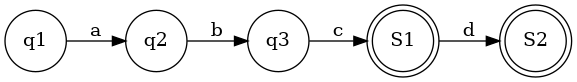
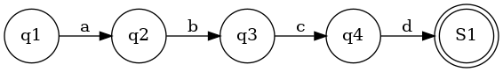
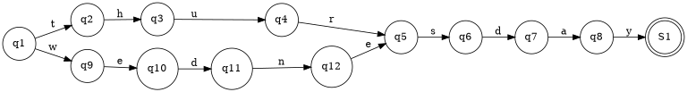
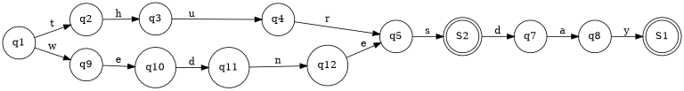
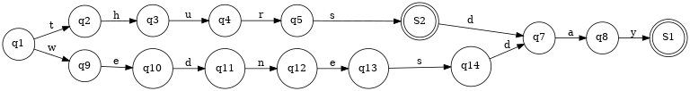

为什么在有Elastic Search的情况下,还要Tantivy?
-
Tantivy比Lucene快
-
Rust写的有更多的可能性
Rust 写的可以移植到intel SGX中,也可能放到WASM中(写Rust附送WASM)
为什么tantivy比lucene快?
如果只说tantivy是Rust写的,所以比java快,是不准确的. lucene的移植,比如Rucene,clucene都比lucene慢
真正的原因是:
SIMD
the care given to what should be a static dispatch and what can be a dynamic dispatch
on the indexer side,the data structure is sensibly different
For count on unions, the algorithm is better on tantivy's side
Finally there is a couple of difference in phase queries handling, I don't know if that make s difference to be honest
建立索引
首先放在内存中.当体积达到一定大的时候,就flush到磁盘.还在内存没有flush的时候是不能搜索的,所以tantivy,lucene叫做接近实时,而非绝对实时
flush到磁盘可以是手工的,也可以是自动的.按需求来.
在tantivy-sgx中需要手工调用commit来刷新索引,因为我去掉了对于磁盘的监控
| POSTING | 8.5M | .idx | 倒排索引 |
| POSTIONS | 1.6G | .pos | 每个Term在document中的position |
| TERMS | 60M | .term | Term->TermInfo dictionary. 使用FST |
| STORE | 4.5G | .store | 原document.如果Scheme中加了STORE |
| POSTITIONSSKIP | 9.4M | .posidx | todo |
| FIELDNORMS | 8.5M | .fieldnorm | todo |
| FASTFIELDS | 5byte | .fast | 空文件 |
Tantivy中,有时会产生很大的索引文件,比如表格中的.pos文件.那么他是怎么读到内存中的?
首先文件用mmap读到内存中,然后转到某个数据结构.
但是转成某个数据结构之后,原始文件还会在缓存中存在.用的是一个HashMap.虽然我不确定HashMap的意义,毕竟把内存搞的很大
POSTIONS的作用
.pos是最大的一个文件，但是他其实没有什么用。 只有在词组查询的时候才会用到。
position与positionreader联系紧密。 SegmentPosting里有一个positionreader 但是SegmentPosting中的positionreader只在positions_with_offset里用到过 继续追查position_with_offset 发现用处很少。
如何验证？
用vmtouch 首先把pos文件从内存中释放
vmtouch -ve engines/tantivy-0.13/idx/05547fff51334b478466bd834bb95df6.pos
然后查看一下，发现确实都释放了。
$ vmtouch -v engines/tantivy-0.13/idx/05547fff51334b478466bd834bb95df6.pos
engines/tantivy-0.13/idx/05547fff51334b478466bd834bb95df6.pos
[ ] 0/6032
Files: 1
Directories: 0
Resident Pages: 0/6032 0/23M 0%
Elapsed: 0.000701 seconds
以上的输出表示内存中没有这个pos文件的缓存。
然后我们把query.txt中包含phrase的行都删除掉。我是用vim打开，然后敲
:g/phrase/d
然后 make bench
再
$ vmtouch -v engines/tantivy-0.13/idx/05547fff51334b478466bd834bb95df6.pos
engines/tantivy-0.13/idx/05547fff51334b478466bd834bb95df6.pos
[ oOOO ooo] 401/6032
Files: 1
Directories: 0
Resident Pages: 401/6032 1M/23M 6.65%
Elapsed: 0.00083 seconds
发现只读了一点头部信息，并没有把整个文件都加载到内存。 如果真正使用了pos文件，整个文件都会在内存中，可以自行实验一下。
Merging Policy
一个document一开始是一个segment. 成百上千的document就会是成百上千的segment. 搜索的时候,每个segment作为一个独立的单元进行搜索 如果有100个segment,那就有1000个线程在搜索,这显然不行. 大多数时候可以合到只有一个Segment.我们尽可能合并成只有几个Segment.我最多见过7个Segment. 合并的过程称为merge
Merge的时候会使用Merging Policy. Tantivy中只实现一个Merging Policy. 他的工作流程如下:
- 首先如果一个Segment太大,就不管了
- 找到和Segment差不多大的一些Segment,比如 8 9 10可以考虑合在一起. 100和8 9就不能聚在一起了
- 如果这一组的Segment有8个,那就合并.比如8个8,就能合并.7个8就不能
对索引优化并不会提高索引速度.只是能减少打开的文件数量.
优化索引的时机并不是在构建索引时.在构建完索引,并且在将来一段时间内不需要被更改时进行优化最好
Term
title:obama 是一个Term. 表示在title中包含obama
多个Term的组合是查询条件, 比如 title:obama OR title:president OR body:obama OR body:president
一个Term是个[u8]. 前4个u8(u32),表示Field(title/body). u32->Field 在Schema中.
Term[5:]表示obama
term会放在fst中,写在硬盘里
Postings
也称为Inverted list, posting list
是Term -> [DocId] 的映射
在tantivy中,是 Term -> [(DocId,frequencies)]
The term frequency is the number of occurrences of the term within the document.
In source code, Term->[(DocId,frequencies);128], which is in postings/serilizer.rs:265 Block struct
Block is used in PostingsSerializer
有3个Trait: Query, Weight, Score
Query是对 搜索pattern解析后返回的抽象. 搜索pattern解析后返回值是 Box
Query负责管理Weight.
Weight负责每一个Segment.查到的数据返回给Query.
每个Segment的处理
首先每个Segment是由7个文件组成的。
以 title:obama 为例
首先对title处理。title成为Field,在Schema中有一个map,会把Field转成u32.这是因为保存在文件的时候，存字符串不太容易，所以都是转成u32的
然后我们要插倒排索引。倒排索引在pos文件里面。在一个大的pos文件里面，根据Field被分割成几部分。 首先找到title的部分。
然后我们要找obama的部分。obama是一个Term，有一个TermInfo描述了Term在Field里的偏移量。这样就能找到obama的倒排索引的内容了
倒排索引是以Block为单位的，每个block里有128个文章和对应的出现频率。 用128是SIMD的要求。
但并不是一个segment只能有128个文章。事实上10000个文章是没有问题的。128篇文章只是一个处理单元。每收集了128篇文章，就保存一次磁盘。 最后尾巴上不够128篇文章也没关系.用0填充就可以了
在实现上，是复用一个Block.这个block有一个is_full方法。 一旦full了，就write to disk,然后clean这个struct,重复使用这一块内存。
SkipList
在倒排索引中使用了跳表.来加速查询.
每个Term建立一个跳表.跳表里存DocId. 可以快速查询一篇文档里面有没有这个Term
跳表只在内存中,不存磁盘.因为没有序列化方法(serde)
FST
FST=Trie(前缀压缩)+后缀压缩
FST优化Trie的同时,也带来了新的问题.否则还要Trie干嘛.
FST vs Trie
- Trie只适合英文
- FST能压缩前缀和后缀. Trie只能压缩前缀
- Trie对插入顺序无所谓,但是FST要求必须按字母顺序插入
- FST主要用在放硬盘里,Trie的序列化到硬盘没见过
- FST加入之后很难修改/删除.Trie的修改和删除容易一点
FST修改/删除=重新构建一个FST.删除不能简单的做个标注,因为你要考虑不同路径来的都删除了.
https://www.cnblogs.com/bonelee/p/6226185.html
用FST能做什么?
- 有序集合
- 有序dictionary (value需要定义运算符,比如整数的加法)
FST与存储相关联.如果只在内存中,不如用无序的hashmap或者有序的BTree.
存储可以是硬盘,socket或者内存.反正是Rust中writable的东西
FST vs BTreeSet,BTreeMap
Rust标准库里有 BTreeSet 和 BTreeMap. 他们是有序的集合和有序的map.
FST也是有序的.那么他们的区别是
- FST中key只能是byte sequences. 必须能用[u8] 表示. BTreeSet和BTreeMap中key只要能序列化就行
- FST中value暂时只能是u64. 顶多支持能定义+的格式比如字符串. BTreeMap没有限制
- BTreeSet和BTreeMap的插入,不需要按照顺序.但是FST必须是按顺序插入.不按顺序插入会报错.也就是说FST没有很好的动态扩展性
FST vs gzip
- 压缩时间和压缩率上,gzip都比FST好
- 但是FST能在上面做搜索
FST 如何压缩后缀的
首先要求按字母顺序的插入.否则只能重新构建.现在FST的实现也是这样的.
难点在于,一个点从unfinished变成finished, 如何判断相同的状态已经出现过了.
如何判断两个点是不是一样的 ?
- 是否同时是终态,或者同时不是终态
- 所有的儿子是不是一样
- 去每个儿子的路径上面的字母(如果是map,还是u64),是不是一样
只有3个条件都满足,才能合并.
如果点的数量不大,可以一个一个条件去比较. 但如果数量太多,最好能压缩一下状态.FST用了一个cache压缩状态,就是把所有条件都xor起来,变成一个u64.
例子

如上图,插入的是abc 和 abcd 两个单词,就会有两个终止状态.FST中不一定只有一个终止状态.也就是说,如果插入的两个单词有前缀关系,就会出现多个终止态.
FST插入一定要按照字典序,例如必须先插入abc,再插入abcd.
如果先插入了abcd,即下图

再插入abc,对于状态4来说,就有点尴尬了.一个普通状态要变成终止态?
我们再看一个插入顺序的问题,导致发生严重后果的例子.首先我们插入thursday和wednesday.现在的FST是正确的.

如果我们再插入一个单词 thurs ,变成下图

副作用是 wednes 也在这个FST中. 这不是我们想要的
我们正确的插入顺序是 thurs thursday wednesday ,FST图应该是这样

注意S2和q14是不同的两个点.不能捏在一起.
FST 的编程实现
- 在现有的FST 中,找到最长前缀.前缀压缩总是安全的,就算路过终态也没关系.终态的点也可以复用.
最后一个单词的每一个节点,都是 BuilderNodeUnfinished . BuilderNodeUnfinished 表示这个点还可能有新的儿子节点.只有一个节点,不会在生出新的儿子节点,才可能从后缀开始合并.
原则
- 一个点只可能unfinished转成finished,不可能finished转成unfinished
- 起点总是非终态的。直到全部完成
- 总有一个终态对象是可以复用的
FST的美妙之处在于,虽然没有太刻意的处理前缀,但是前缀还是压缩了.
如何学习FST
fst-bin 目录提供的二进制可以把fst文件转成graphviz格式,然后可以画出图片.参见 fst -h
如果你想知道某几个输入之后的FST的形状,可以用它画一画.
FST如何序列化
todo 有点绕,不想看了.反正没用serde
FST如果做模糊搜索的(Levenshtein,regex)
todo
Tantivy中的FST
tantivy中FST用来存term
tantivy魔改了FST,我还没细看.为什么要魔改,我也不清楚
参考文献
https://blog.burntsushi.net/transducers/
BM25
todo
Lucene
这里整理一些我看到的和lucene相关的资料
| Jargon | Meaning |
|---|---|
| Field | StringField, TextField and NumericDocValuesField |
Pattern
| java | 默认域包含java项的文档 |
| java unit | 默认域包含java或者unit的文档 |
| java OR unit | 同上 |
| +java +unit | 默认域同时包含java和unit的文档 |
| java AND unit | 同上 |
| title:ant | title域中包含ant的文档 |
| java~ | 与java相似的项的文档,例如lava |
| java* | 包含与java开头的项的文档,例如javaserver java.net |
Merging policy
有两种mergy policy.一个根据大小(字节)合并,一种根据文档个数合并. 如果文档大小的方差比较大,建议使用文档大小合并 当然,你也可以自己写Merging policy
Compare with tantivy
| lucene | tantivy | |
|---|---|---|
| 音近词 | ✅ | ❌ |
| 形近词 | ✅ | ❌ |
| 自定义排序 | ✅ | I don't know |
音近词
似乎用处不大
在google搜索中,只有当所有单词都出现拼写错误,因而没有搜索到任何匹配文档的时候,才会检查音近词,否则搜索的结果就太多了